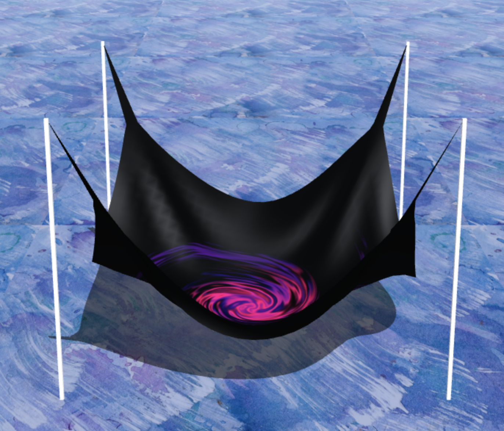
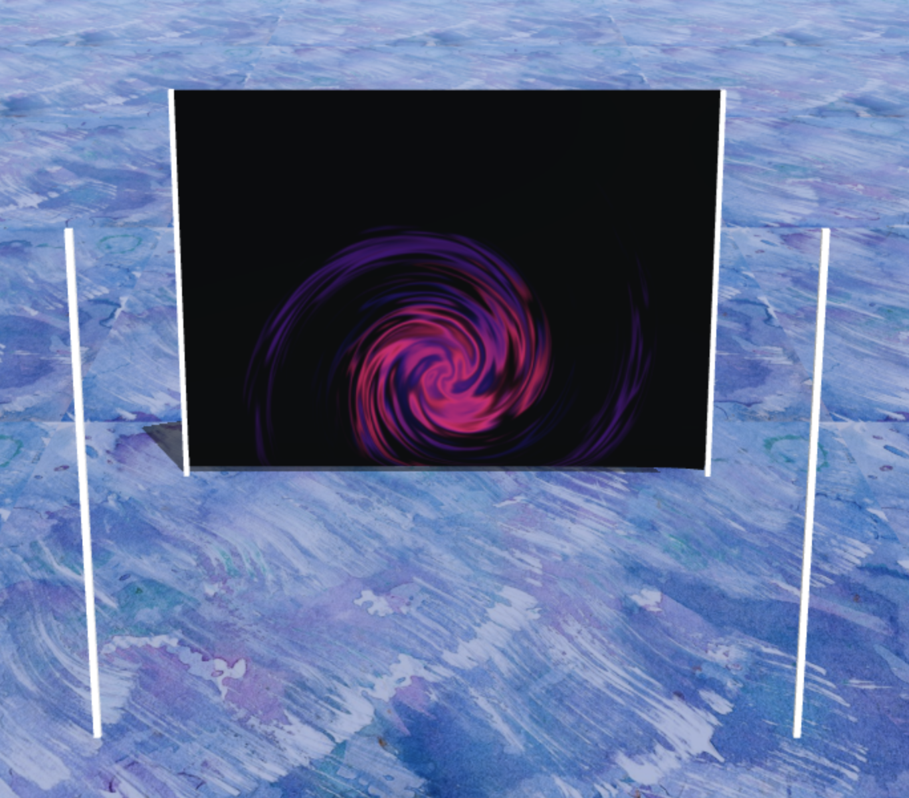
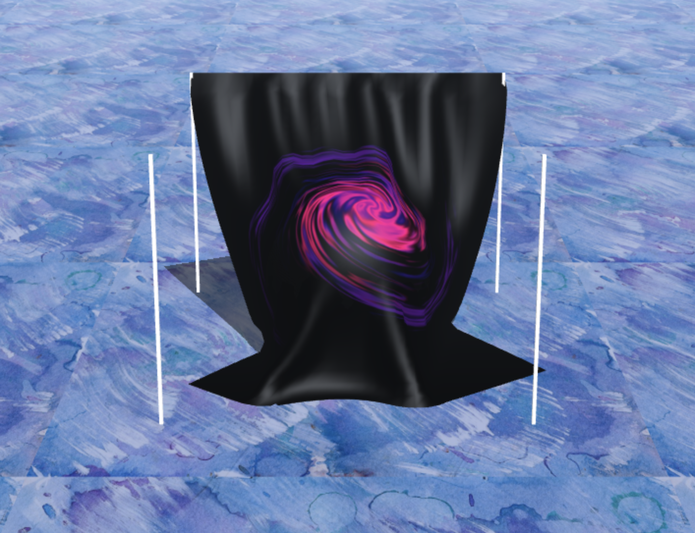
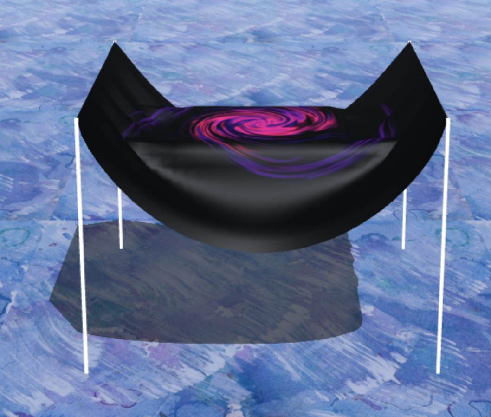

COS426 Assignment 5 Cloth Simulation — Writeup
Switch to: Simulation
- (1.5) Cloth
- (1.5) Constraints
- (1.0) Gravity
- (1.5) Verlet integration
- (0.5) Floor collision
- (1.5) Sphere collision
- (1.5) Box collision
- (1.0+) Extensions
- Collaboration
- Feedback
Cloth
In order to add all of the springs between particles, I used for loops to run through the cloth and create constraints. I followed the explanation from the UC Irvine lectures. The structural constraints connected particles to their immediate 4 neighbors. Shear constraints connected particles to their diagonal neighbors. Lastly, the bending constraints connecting particles two away from each other. For each type of constraint, I used two for loops in order to be sure to account for edge cases in both directions.
Constraints
In order to enforce the constraints, I first implemented the equation for v_corr in the enforce function. I found v_12 by subtracting p2 from p1. I then found the magnitude of the vector and saved 0.5 * v_12 * (||v12|| - d) / ||v_12||. I then added this value to p1 and subtracted it from p2 in order to ensure that the points came closer together (rather than apart). After this, I wrote the enforceConstraints function, which was a for loop that called enforce on each of the saved constraints in the cloth.
Gravity
To implement gravity, I added one line of code that added a force vector to the netForce vector in addForce. I then editted the applyGravity function. For each particle, I found the force of gravity using the formula F = ma. I made sure to make the value negative because gravity pulls in that direction! I then created a vector that only had a y component equal to gravity. Lastly, I used the addForce function to incorporate the force of gravity.
Verlet integration
For verlet integration, I implemented the function x_t+dt=x_t+(1-D)*(x_t-x_t-dt)+a_t*(d_t)^2. First, I subtracted the previous position from the current position, then multiplied it by (1 - D). Then, I found acceleration by dividing force by mass, then I multiplied it by deltaT^2. Lastly, I set the previous position to the current position, updated the current position by adding the current position and the other terms I found, and reset the netForce vector.
Deliverable:

Floor collision
For floor collisions, I checked the y coordinate of each particle. If the y coordinate was less than -249.0, I reset it to that value.
Deliverable:

Sphere collision
For sphere collision, I checked if the particle was inside of the sphere by comparing the distance from the center of sphere to the radius. If it was, I projected it onto the surface of the sphere by normalizing this difference, scaling it by the size of the sphere, and adding it from the center of the sphere. I then checked if the previous position was outside of the sphere with the same method. If it was, then I updated the position using the weighted friction formula. Otherwise, I updated it to the first calculation!
Deliverable:

Box collision
I used a similar thought process as sphere collision to handle collisions with the box. I first checked if the particle was inside of the box using the Box3 containsPoint function. If it was, then I found the distance from the particle to each side of the box. I then tested each distance and set the no friction position to closest plane. Lastly, I check the location of the previous position, and incorporated friction if necessary.
Deliverable:

Extensions
My first extension was wind! My implementation doesn't quite look like wind, but I thought it was kinda a funky movement. :) For my implementation, I added a component to the windForce vector based on each particle in the mesh's position. I multiplied the normalized position by a random scalar between positive and negative windStrength. I then added this vector to the original windForce vector.
Secondly, I added a few new textures to the mesh. The current one on display is paint.png on the floor and swirl.gif on the cloth.
Collaboration
I worked with Reece Schachne, Lyra Katzman, Aaron Bargotta, and Michael Popovici on this assignment!
[OPTIONAL] Feedback
As you might already know, this is a brand new animation assignment for COS 426 and replaces an older one that deals with implementing various small particle systems. You can find the assignment from last year here.
We don't expect an assignment to go perfectly smoothly in its debut semester, so we would greatly appreciate any feedback you can give us about your experience working on this assignment. For example, approximately how many hours did you spend on it? What parts were the most difficult or confusing to work through? Do you have any suggestions on how to improve this assignment for the future?
Thank you for your feedback! Please write below:
My feedback: Honestly I really liked this assignment! I thought it went really well and don't have any complaints/nothing went wrong. The instructions were clear and overall, the assignment took me more or less 10 hours. Also, I'm so sorry Austin for my silly question about textures. :)